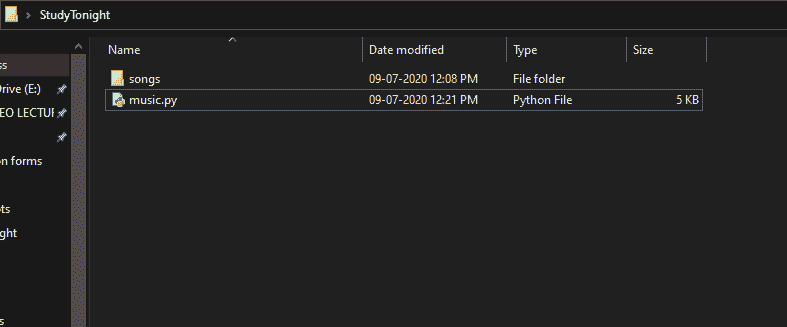
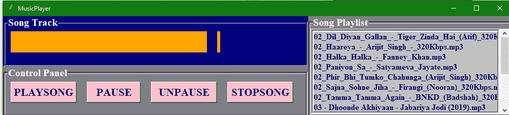
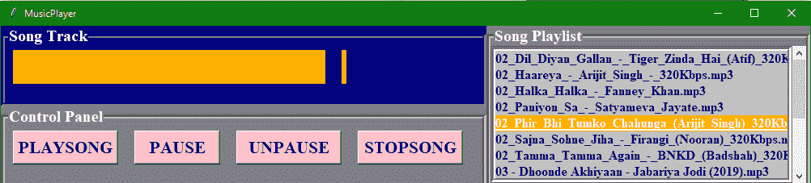
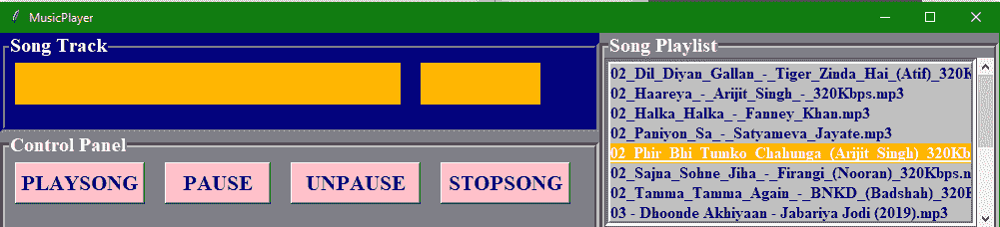
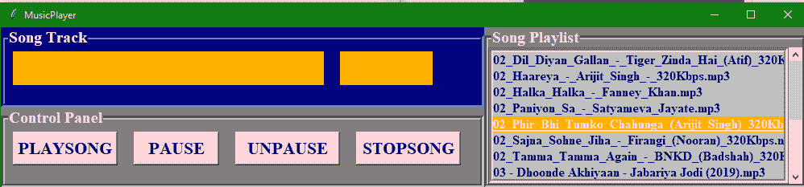
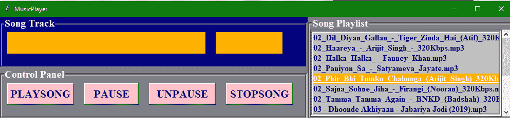

Tkinter 音乐播放器应用（Python 项目）
原文：https://www.studytonight.com/tkinter/music-player-application-using-tkinter
在本教程中，我们将使用 Tkinter 和 Pygame 模块用 Python 创建一个音乐播放器应用。
在我们的日常生活中，我们看到每个人都有一个爱好，那就是听音乐。所以为了听音乐，他们都需要一个音乐播放器(硬件或软件)，可以播放自己喜欢的歌曲。我们必须在我们的电脑上安装这个音乐播放器，基于操作系统，即视窗、麦金塔、安卓、Linux 等。然后我们可以听我们喜欢的歌。
现在我们将帮助您从头开始编码和创建音乐播放器。
用于音乐播放器应用的库:
现在，我们将告诉您我们将在代码中使用的库:
1.Tkinter
我们已经在这个页面的标题中告诉过您，我们将使用 Tkinter 库，这是一个用于 GUI 创建的标准库。Tkinter 库是最受欢迎的，也非常容易使用，它附带了许多小部件(这些小部件有助于创建好看的图形用户界面应用)。
此外，Tkinter 是一个非常轻量级的模块，它有助于创建跨平台应用(因此相同的代码可以轻松地在 Windows 、 macOS 和 Linux 上工作)
To use all the functions of Tkinter you need to import it in your code and the command for the same is:
from tkinter import *

2.Pygame 模组
Pygame 是一个 Python 模块，可与计算机图形和声音库一起工作，设计时具有播放音频、视频等不同多媒体格式的能力。在创建我们的音乐播放器应用时，我们将使用 Pygame 的mixer.music模块为我们的音乐播放器应用提供不同的功能，这些功能通常与歌曲轨道的操作有关。
用于安装 pygame 模块的命令是:
pip install pygame
要在代码中使用该模块，您需要编写以下内容:
import pygame
3。操作系统模块
没有必要显式安装这个模块，因为它附带了 Python 的标准库。该模块提供了与操作系统交互的不同功能。在本教程中，我们将使用操作系统模块从指定目录中获取歌曲播放列表，并将其提供给音乐播放器应用。
要在代码中使用此模块，您需要导入其和命令，如下所示:
import OS
导入库和模块后，现在是时候创建一个基本窗口，我们将在其中添加我们的用户界面元素或 Tkinter 小部件。您可以在导入库之后，也可以在根窗口循环之前的末尾添加此代码，代码如下:
root = Tk() # In order to create an empty window
# Passing Root to MusicPlayer Class
MusicPlayer(root)
音乐播放器类
这里我们有在 MusicPlayer 类中定义的构造器和其他函数。
1._init_建造师
在这个构造器的帮助下，我们将为窗口设置标题，为窗口设置几何图形。我们将启动 pygame 和 pygame 混合器，然后声明轨迹变量和状态变量。
然后我们将为歌曲标签 & 状态标签创建轨道帧，然后在插入歌曲轨道标签和状态标签之后。
之后，我们将创建按钮框和将播放、暂停、取消播放和停止按钮插入其中。
然后我们将创建播放列表框**并在其中添加滚动条**，我们将向播放列表中添加歌曲。
代码片段如下:
def __init__(self,root):
self.root = root
# Title of the window
self.root.title("MusicPlayer")
# Window Geometry
self.root.geometry("1000x200+200+200")
# Initiating Pygame
pygame.init()
# Initiating Pygame Mixer
pygame.mixer.init()
# Declaring track Variable
self.track = StringVar()
# Declaring Status Variable
self.status = StringVar()
# Creating the Track Frames for Song label & status label
trackframe = LabelFrame(self.root,text="Song Track",font=("times new roman",15,"bold"),bg="Navyblue",fg="white",bd=5,relief=GROOVE)
trackframe.place(x=0,y=0,width=600,height=100)
# Inserting Song Track Label
songtrack = Label(trackframe,textvariable=self.track,width=20,font=("times new roman",24,"bold"),bg="Orange",fg="gold").grid(row=0,column=0,padx=10,pady=5)
# Inserting Status Label
trackstatus = Label(trackframe,textvariable=self.status,font=("times new roman",24,"bold"),bg="orange",fg="gold").grid(row=0,column=1,padx=10,pady=5)
# Creating Button Frame
buttonframe = LabelFrame(self.root,text="Control Panel",font=("times new roman",15,"bold"),bg="grey",fg="white",bd=5,relief=GROOVE)
buttonframe.place(x=0,y=100,width=600,height=100)
# Inserting Play Button
playbtn = Button(buttonframe,text="PLAYSONG",command=self.playsong,width=10,height=1,font=("times new roman",16,"bold"),fg="navyblue",bg="pink").grid(row=0,column=0,padx=10,pady=5)
# Inserting Pause Button
playbtn = Button(buttonframe,text="PAUSE",command=self.pausesong,width=8,height=1,font=("times new roman",16,"bold"),fg="navyblue",bg="pink").grid(row=0,column=1,padx=10,pady=5)
# Inserting Unpause Button
playbtn = Button(buttonframe,text="UNPAUSE",command=self.unpausesong,width=10,height=1,font=("times new roman",16,"bold"),fg="navyblue",bg="pink").grid(row=0,column=2,padx=10,pady=5)
# Inserting Stop Button
playbtn = Button(buttonframe,text="STOPSONG",command=self.stopsong,width=10,height=1,font=("times new roman",16,"bold"),fg="navyblue",bg="pink").grid(row=0,column=3,padx=10,pady=5)
# Creating Playlist Frame
songsframe = LabelFrame(self.root,text="Song Playlist",font=("times new roman",15,"bold"),bg="grey",fg="white",bd=5,relief=GROOVE)
songsframe.place(x=600,y=0,width=400,height=200)
# Inserting scrollbar
scrol_y = Scrollbar(songsframe,orient=VERTICAL)
# Inserting Playlist listbox
self.playlist = Listbox(songsframe,yscrollcommand=scrol_y.set,selectbackground="gold",selectmode=SINGLE,font=("times new roman",12,"bold"),bg="silver",fg="navyblue",bd=5,relief=GROOVE)
# Applying Scrollbar to listbox
scrol_y.pack(side=RIGHT,fill=Y)
scrol_y.config(command=self.playlist.yview)
self.playlist.pack(fill=BOTH)
# Changing Directory for fetching Songs
os.chdir("PATH/OF/DIRECTORY")
# Fetching Songs
songtracks = os.listdir()
# Inserting Songs into Playlist
for track in songtracks:
self.playlist.insert(END,track)
在上面的代码中，用存储歌曲文件的适当路径更改路径/OF/DIRECTORY 。
2.playsong()功能
现在我们将定义播放歌曲功能，代码为:
def playsong(self):
# Displaying Selected Song title
self.track.set(self.playlist.get(ACTIVE))
# Displaying Status
self.status.set("-Playing")
# Loading Selected Song
pygame.mixer.music.load(self.playlist.get(ACTIVE))
# Playing Selected Song
pygame.mixer.music.play()
3.stopsong()功能
停止歌曲的代码片段:
def stopsong(self):
# Displaying Status
self.status.set("-Stopped")
# Stopped Song
pygame.mixer.music.stop()
4.pausesong()功能
暂停歌曲的代码片段:
def pausesong(self):
# Displaying Status
self.status.set("-Paused")
# Paused Song
pygame.mixer.music.pause()
5.unpausesong()功能
解包歌曲的代码片段:
def unpausesong(self):
# It will Display the Status
self.status.set("-Playing")
# Playing back Song
pygame.mixer.music.unpause()
6.根窗口循环
该命令将是:
root.mainloop()
下面是我们应用的一些截图:
名为 study 的文件夹今晚放置歌曲的代码文件和文件夹如下所示:

我们将在代码中提供歌曲文件夹的路径，所有歌曲都放在该文件夹中，以便访问它们。
下面的截图向您展示了应用的外观:

每当你点击歌曲时，它会是这样的:

点击播放歌曲按钮:

点击暂停按钮:

点击停止按钮:

所以这都是关于使用 Tkinter 构建音乐播放器应用。希望大家喜欢这个应用。请与我们分享更多关于基于 Tkinter 的桌面应用的想法，我们一定会在我们的 Tkinter 教程中添加更多的 Tkinter 项目。